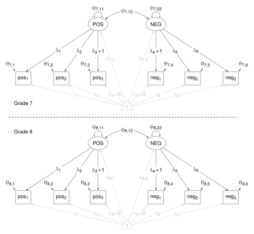
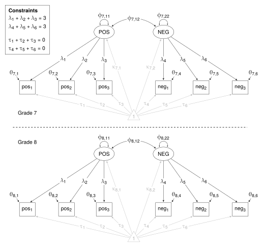

Effect Scaling
Little, T., Slegers, D., & Card, N. (2006). A non-arbitrary method of identifying and scaling latent variables in SEM and MACS models. Structural Equation Modeling, 13(1), 59-72.
This example shows how to set constraints for different methods of identification and scaling in latent variable models. Though invariance is not a topic of discussion, the example shows how to set constraints for strong metric invariance. Also, the example shows how to use summary data in a two- group model.
Little et al discuss methods for identification and scaling of latent variables in SEMs. These methods are:
- Reference Group Method - For each construct, the latent variance is fixed to one and the latent mean is fixed to zero. With strong metric invariance (invariance of loadings and intercepts), latent means and variances are freely estimated in subsequent groups.
- Marker Variable Method - For each construct, the loading of one indicator is fixed to one, and the intercept for the chosen indicator is fixed to zero. With strong metric invariance, these constraints apply in both groups.
- Effects Coding method - For each construct, constrain loadings to add to the number of indicators, and constrain indicator intercepts to add to zero. With strong metric invariance, these constraints apply in both groups.
They present a two-group (7th grade and 8th grade), two-construct (positive affect and negative affact) model. Each construct is assessed with three manifest indicators. The SEM diagram below shows the model as it might apply to the whole sample. This one-group model is presented to explain the symbols used in the paper, and to show how they apply in the model diagrams. First, POS and NEG are the constructs; and pos1, …, neg3 are the manifest indicators. The solid lines represent the covariance structure, and the gray lines represent the mean structure (ie, the means and intercepts).
The symbols are:
- \(\uplambda\) - loadings
- \(\upphi\) - latent variances and covariance
- \(\uptheta\) - indicator residual variances
- \(\upkappa\) - latent means
- \(\uptau\) - indicator intercepts

Load relevant packages
First, load the lavaan package.
library(lavaan)Get the data
LISREL script in Appendix A (pp. 71-72) gives correlations, standard deviations, means, and sample sizes for each group. From these, the variance-covariance matrices for each group can be obtained. The means, standard deviations, and correlations are entered as vectors. In Appendix A, only the lower triangle of correlations is presented with ones along the diagonal; and that is all that is needed here.
# 7th grade
cor7 <- c(
1.00000,
0.75854, 1.00000,
0.76214, 0.78705, 1.00000,
0.02766, 0.00973, -0.05762, 1.00000,
-0.06112, -0.06105, -0.14060, 0.78501, 1.00000,
-0.02222, -0.05180, -0.10250, 0.81616, 0.81076, 1.00000)
means7 <- c(3.13552, 2.99061, 3.06945, 1.70069, 1.52705, 1.54483)
sd7 <- c(0.66770, 0.68506, 0.70672, 0.71418, 0.66320, 0.65276)
n7 <- 380
# 8th grade
cor8 <- c(
1.00000,
0.81366, 1.00000,
0.84980, 0.83523, 1.00000,
-0.18804, -0.15524, -0.21520, 1.00000,
-0.28875, -0.24951, -0.33769, 0.78418, 1.00000,
-0.29342, -0.21022, -0.30553, 0.79952, 0.83156, 1.00000)
means8 <- c(3.07338, 2.84716, 2.97882, 1.71700, 1.57955, 1.55001)
sd8 <- c(0.70299, 0.71780, 0.76208, 0.65011, 0.60168, 0.61420)
n8 <- 379Variable names are also contained in the LISREL script, but I shorten the names a little.
names = c("Pos1", "Pos2", "Pos3", "Neg1", "Neg2", "Neg3")Use the getCov() function from the lavaan package to obtain the variance/covariance matrix for each group.
cov7 <- getCov(cor7, sds = sd7, names = names)
cov8 <- getCov(cor8, sds = sd8, names = names)Combine the covariances, means, and sample sizes into lists.
cov <- list("Grade 7" = cov7, "Grade 8" = cov8)
means <- list(means7, means8)
n <- list(n7, n8)Reference-Group Method
The model
The model with the constraints is shown below. Some points to note. There are two groups: Grade 7 and Grade 8. The corresponding loadings (\(\uplambda\)) and intercepts (\(\uptau\)) are equal across the groups. The latent variances (\(\upphi\)7,11 and \(\upphi\)7,22) and latent means (\(\upkappa\)) are constrained to 1 and 0 respectively in the first group only. The residual variances (\(\uptheta\)) are freely estimated in each group, and the latent covariance is freely estimated in each group.

When constructing the model statment, there are some points to be considered.
First, the constraints applying to latent means and variances apply only in the first group. In the model statement, pre-multiply the mean or the variance by a vector containing the constraints; like this: c(1,NA) - the 1 forces the parameter in the first group to be constrained to 1; the NA forces the parameter in the second group to be estimated.
Second, LS&G state that the data display strong metric invariance (p. 63); that is, the corresponding loadings and intercepts are equal across the groups. There is no need to be concerned with these constraints when constructing the model statement - they will be set up in the next step. (Strictly, the intercepts do not even need to be mentioned in the model statement - lavaan will add them automatically when sample.means are in the model. But they are left in the statement below because intercepts are implicated in constraints in models to follow.)
Third, strong metric invariance places no constraints on indicator variances - they are freely estimated in each group. But again, there is not need to be concerned with or even to mention them when constructing the model statement - lavaan will add them automatically.
Finally, lavaan’s default marker-variable method has to be explicitely disabled by pre-multiplying the first indicator for both constructs by NA.
m1 <- "
# Measurement Model
# - Free the first loading so it can be estimated
Pos =~ NA*Pos1 + Pos2 + Pos3
Neg =~ NA*Neg1 + Neg2 + Neg3
# Latent variances and covariance
# - Constrain latent variances to 1 in first group
Pos ~~ c(1,NA)*Pos
Neg ~~ c(1,NA)*Neg
Pos ~~ Neg
# Indicator intercepts
Pos1 ~ 1
Pos2 ~ 1
Pos3 ~ 1
Neg1 ~ 1
Neg2 ~ 1
Neg3 ~ 1
# Latent means
# - Constrain latent means to 0 in first group
Pos ~ c(0,NA)*1
Neg ~ c(0,NA)*1
"Fit the model and get the results
To deal with strong metric invariance, set group.equal = c("loadings", "intercepts") in the sem() function.
m1_fit <- sem(m1, sample.cov = cov, sample.nobs = n,
sample.mean = means, group.equal = c("loadings", "intercepts"))
summary(m1_fit, standardized = TRUE, fit.measures = TRUE)Compare the output with “Method 1” in Table 2 (pp. 64-75).
A shortcut
Lavaan can do reference-group scaling automatically - set std.lv = TRUE in the sem() function. The constraints are the same as above - in the first group, latent variances are constrained to one, and latent means are constrained to zero.
m1_short <- "
# Measurement Model
Pos =~ Pos1 + Pos2 + Pos3
Neg =~ Neg1 + Neg2 + Neg3
"
m1_short_fit <- sem(m1_short, sample.cov = cov, sample.nobs = n,
sample.mean = means, std.lv = TRUE,
group.equal = c("loadings", "intercepts"))
summary(m1_short_fit, standardized = TRUE, fit.measures = TRUE)Check the output. It is the same as before except for one detail. It might be disconcerting for some that the latent means in the first group are not reported. Maybe it’s not important because they are zero (remember the constraint). To see them in the output, set remove.unused = FALSE in the summary() function.
summary(m1_short_fit, remove.unused = FALSE, standardized = TRUE,
fit.measures = TRUE)Marker-Variable Method
The model
The model with the constraints is shown below.

Results for three versions of Method 2 are presented in Table 2 - in each case, constrains are applied to different indicator variables. Here, only the third is considered - constraints apply to loadings and intercepts for the third indicator in the POS construct, and to the first indicator in the NEG construct.
Some points to be considered.
First, with strong metric invariance in place, the constraints applying to intercepts and loadings apply in both groups. In the model statement, pre-multiply the loadings by c(1,1), and the intercepts by c(0,0).
Second, again, the point concerning strong metric invariance - it will be set up in the next step.
Third, again, there is no need to mention indicator variances - lavaan will add them automatically.
Finally, lavaan’s default marker-variable method has to be explicitely disabled for the POS construct by pre-multiplying the first indicator be NA.
m2c <- "
# Measurement Model
# - Free the first loading in Pos so it can be estimated
# - Constrain 3rd indicator in Pos to 1 in both groups
# - Constrain 1st indicator is Neg to 1 in both groups
Pos =~ NA*Pos1 + Pos2 + c(1,1)*Pos3
Neg =~ c(1,1)*Neg1 + Neg2 + Neg3
# Latent variances and covariance
Pos ~~ Pos
Neg ~~ Neg
Pos ~~ Neg
# Indicator intercepts
# - Constrain 3rd residual variance in Pos to 0 in both groups
# - Constrain 1st residual variance in Neg to 0 in both groups
Pos1 ~ 1
Pos2 ~ 1
Pos3 ~ c(0,0)*1
Neg1 ~ c(0,0)*1
Neg2 ~ 1
Neg3 ~ 1
# Latent means
Pos ~ 1
Neg ~ 1
"Fit the model and get the results
As before, the group.equal = c("loadings", "intercepts") statement in the sem() function forces corresponding loadings and intercepts to be equal across the groups.
m2c_fit <- sem(m2c, sample.cov = cov, sample.nobs = n,
sample.mean = means, group.equal = c("loadings", "intercepts"))
summary(m2c_fit, standardized = TRUE, fit.measures = TRUE)Compare the output with “Method 2c” in Table 2 (pp. 64-75).
lavaan default
This is not lavaan’s default method of scaling. The default method constrains the loadings for the first indicator to one for both constructs and, because of the strong metric invariance, in both groups. When there is a mean structure in the model, lavaan sets the latent means to zero (in the first group only). In the summary() function set remove.unused = FALSE to see the latent means.
m2c_default <- "
# Measurement Model
Pos =~ Pos1 + Pos2 + Pos3
Neg =~ Neg1 + Neg2 + Neg3
"
m2c_default_fit <- sem(m2c_default, sample.cov = cov, sample.nobs = n,
sample.mean = means, group.equal = c("loadings", "intercepts"))
summary(m2c_default_fit, remove.unused = FALSE,
standardized = TRUE, fit.measures = TRUE)Effects-Coding Method
The model
The model with the equality constraints is shown below.

In the model statement, the loadings and the intercepts are labelled (see the “# Measurement Model” and the “# Indicator intercepts” sections in the model statement) so that the labels can be used to impose the constraints. Constraints are imposed on the loadings and the intercepts using the == operator - see the “# Constraints” section in the model statement.
Same points as before: lavaan will add indicator variances automatically; Constraints concerning strong metric invariance will be attended to in the next step; and the default marker-variable method has to be explicitely disabled.
m3 <- "
# Measurement Model
# - Free the first loading so it can be estimated
# - Label the loadings so they can be used in the constraints
Pos =~ NA*p1*Pos1 + p2*Pos2 + p3*Pos3
Neg =~ NA*n1*Neg1 + n2*Neg2 + n3*Neg3
# Latent variances and covariance
Pos ~~ Pos
Neg ~~ Neg
Pos ~~ Neg
# Indicator intercepts
# - Label the intercepts so they can be used in the constraints
Pos1 ~ ip1*1
Pos2 ~ ip2*1
Pos3 ~ ip3*1
Neg1 ~ in1*1
Neg2 ~ in2*1
Neg3 ~ in3*1
# Latent means
Pos ~ 1
Neg ~ 1
# Constraints
# For each construct:
# The sum of the loadings equals the number of indicators
# The sum of the intercepts equals zero
p1 + p2 + p3 == 3
n1 + n2 + n3 == 3
ip1 + ip2 + ip3 == 0
in1 + in2 + in3 == 0
"Fit the model and get the summary
As before, the group.equal = c("loadings", "intercepts") statement in the sem() function forces corresponding loadings and intercepts to be equal across the groups.
m3_fit <- sem(m3, sample.cov = cov, sample.nobs = n,
sample.mean = means, group.equal = c("loadings", "intercepts"))
summary(m3_fit, standardized = TRUE, fit.measures = TRUE)Compare the output with “Method 3” in Table 2 (pp. 64-75).
A shortcut
Lavaan can do effects-scaling automatically - set effect.coding = TRUE in the sem() function.
m3_short <- "
# Measurement Model
Pos =~ Pos1 + Pos2 + Pos3
Neg =~ Neg1 + Neg2 + Neg3
"
m3_short_fit <- sem(m3_short, sample.cov = cov, sample.nobs = n,
sample.mean = means, effect.coding = TRUE,
group.equal = c("loadings", "intercepts"))
summary(m3_short_fit, standardized = TRUE, fit.measures = TRUE)Fit measures
LS&G state that the models “produce overall model fit statistics that are identical” (p. 66). The following shows how to extract fit measures from all models presented here, and present them in a table.
# A function to extract fit measures
GetFit <- function(fit) {
fitMeasures(fit,
c("chisq", "df", "pvalue", "cfi", "tli", "rmsea"))
}
# Add the fitted lavaan objects to a list
models <- list(
m1_fit, m1_short_fit,
m2c_fit, m2c_default_fit,
m3_fit, m3_short_fit)
names(models) = c(
"Method 1", "Method 1 Shortcut",
"Method 2c", "lavaan Default",
"Method 3", "Method 3 Shortcut")
# Get a table of fit measures
do.call(rbind, lapply(models, GetFit))Compare the fit measures with those presented on page 66.
The R script with minimal commenting is available in Little_Scaling.r.